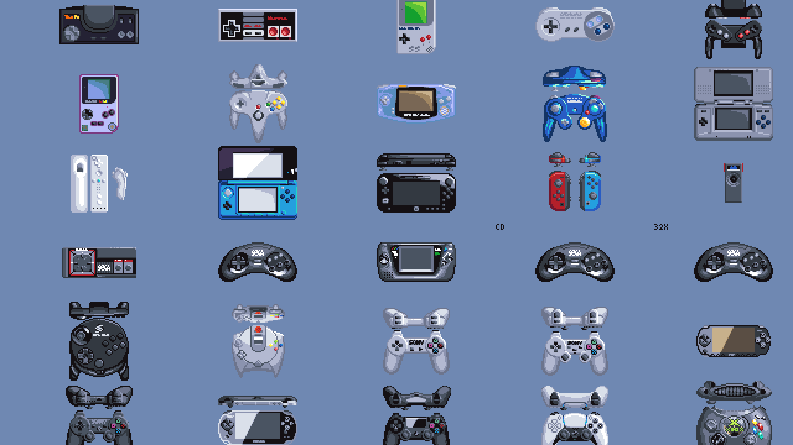

15 Jogos mais importantes da minha vida.
Jogos que marcaram a minha vida como gamer!
por Lucas Ramos
15. Tony Hawk's Pro Skater 2 (Playstation)

Considerado por muitos (inclusive eu), o maior jogo da série. Lançado em 2000,
primeiramente para o Playstation, depois lançado para o Nintendo 64, Dreamcast e
Game Boy Color. Foi revolucionário para o um jogo do gênero, e um fenômeno para
a época, onde influenciou muitos a dar os primeiros passos no skate, além de
trazer uma relevância para o cenário do esporte e para os skatistas, que
estavam presentes no jogo, com o grande destaque, do próprio, Tony Hawk!
Todo esse sucesso, claro, foi por causa de sua jogabilidade refinada, muito
aprimorada comparado ao primeiro jogo da série, além de melhorar inúmeros
aspectos, adicionando mais manobras, customizações, mais locações,
objetivos e mais conteúdo ao jogo. E, ainda conta com uma trilha
sonora sensacional! Totalmente casada com a temática e a cultura
do skate, com músicas de bandas de Rock, Metal, Punk, Hardcore,
e Hip-Hop, com destaque para minhas 4 músicas favoritas;
"Bring The Noise"- Anthrax & Chuck D (Public Enemy)
"Blood Brothers" - Papa Roach
"Bad Religion" - You
"No Cigar" - Millencolin.
Tony Hawk's Pro Skater 2, sempre tem espaço no meu coração, pois foi um dos
jogos mais influentes na minha trilha da infância para adolescência, a rotina
era simples, chegar da escola, jogar ele pelo resto do dia, nos finais de
semana então, já sabem. Ajudou muito a formar minha admiração pelo o esporte,
e ditou muito meu estilo para a época, além de ter me trazido muitos amigos
através desse jogo incrível, onde sempre que sobra um tempo, volto para jogá-lo.
14. Guitar Hero 3: Legends of Rock (Playstation 2)

O maior e melhor jogo de ritmo já feito, simples assim. O Auge da série foi
atingido em 2007, 2 anos depois do primeiro jogo de estreia, lançado para o
Playstation 2, Playstation 3, Wii e Xbox 360. O jogos dos sonhos até então,
para os amantes de Rock & Metal, com uma playlist incrível! Cheia de grandes
clássicos, além de músicas secretas, que eram desbloqueadas apenas no modo
cooperativo e músicas que podiam ser compradas na loja, com dinheiro do
modo carreira. As versões de Xbox 360 e Playstation 3 suportam canções
para download. Vários pacotes de música gratuitos e pagos foram
disponibilizados no Xbox Live Marketplace e na PlayStation Store.
Além disso, o CD da trilha sonora oferece um código usado para
resgatar três faixas exclusivas jogáveis no Xbox Live Marketplace.
A melhor gameplay da série, os controles estão calibradíssimos,
diferente dos dois primeiros títulos da saga, onde havia um input lag
bem leve, que comprometia as vezes o gameplay, mas aqui, tudo funciona
liso, responsivo e com um design melhor. Além da direção de arte, os
gráficos belíssimos, o sound design é sensacional e impecável.
O jogo podia ser jogado tanto no joystick padrão, quanto na guitarra, que
vinha no bundle do jogo. Posteriormente, todos os outros títulos da série
só pode ser jogado com o periférico específico para o jogo, como microfone,
guitarra, baixo e bateria.
Guitar Hero 3, não é só meu jogo favorito da série e do gênero.
Ele foi um grande responsável, que formou meu gosto musical que
aprecio hoje em dia, o jogo me apresentou muitas bandas que eu
não conhecia até meus 12 anos de idade, conheci bandas incríveis
através dele: Lacuna Coil, Disturbed, Killswitch Engage, In Flames,
Kaiser Chiefs. Além, de muitas bandas favoritas estarem presente:
Black Sabbath, Iron Maiden, Metallica, Red Hot Chili Peppers,
entre outras que gosto muito.
13. Marvel vs. Capcom 2: New Age of Heroes (Dreamcast)

Era 2002, eu com meus 7 anos de idade, nem sequer sabia o significado
da palavra crossover, só tinha uma ideia mesmo, já que assistia alguns
animes, desenhos, e sériados que realizaram tal evento. Foi então, que na
locadora mais perto da minha casa, finalmente havia chegado o Dreamcast,
4 anos depois do seu lançamento, e um dos melhores jogos de luta da
história, ou melhor, meu crossover favorito de todos os tempos!
Meu parâmetro para jogos de luta, era Street Fighter 2 e Ultimate
Mortal Kombat 3, os que mais joguei pré-geração Dreamcast/Playstation 2
ambas versões do Super Nintendo. Já havia experimentado outros jogos de luta,
inclusive o primeiro título da saga no Playstation, mas nada que me prendesse
tanto quanto MARVEL vs. Capcom 2. Na minha opinião, uma sequência infinitamente
melhor que o original, em tudo, a começar pela gameplay, muito mais balanceada,
sistematicamente, um dos melhores e mais divertidos que já joguei até hoje
em um jogo de luta. Agora podemos usar 3 personagens, temos um roster com
56 personagens (algo incrível e inacreditável até então), e uma trilha,
que ao meu gosto, casou muito bem com o jogo, além dos gráficos belíssimos,
sprites e animações impecáveis. Esse jogo se recusa a envelhecer, de tão
único que ele é. Por mais que a história, e o vilão Abyss do modo Arcade não
sejam os melhores da série, aspectos que são muito melhores na sequência,
mas, MARVEL vs. Capcom 2 foi o jogo que despertou minha paixão por jogos de
luta, posteriormente quando comprei meu PS2, foi meu jogo de luta definitivo,
revezando com Tekken 5 e Dragon Ball Z Budokai 3, mas ele foi o que mais me deu
incontáveis horas de diversão, seja jogando sozinho, ou com meus amigos e primos.
E continua até hoje me divertindo, quando volto a jogá-lo.
Graças a ele, também conheci muitos personagens das duas empresas do
crossover, que até então, eram desconhecidos para mim, assim me fazendo
ainda mais fã do que já era das duas.
12. Crash Bandicoot 2: Cortex Strikes Back (Playstation)

Se você me perguntar qual jogo de plataforma 3D eu pensa primeiro como
o definitivo, eu não consigo pensar em outro, mesmo sabendo que haviam
games que fizeram feitos maiores naquela época, no mesmo estilo,
Ocarina of Time e Mario 64 me vem à mente. Mas, Crash Bandicoot 2 era o
que eu tinha, e o que mais me proporcionou horas e horas de diversão.
E difícil até falar, como eu amo esse jogo, tudo nele me cativou
quando joguei pela primeira vez, gameplay simples, mas uma das
intuitivas, divertidas e viciantes. Chamar de genial, o que a
Naughty Dog fez com esse jogo, é pouco, parece que não existe
nada melhor e satisfatório, do que pular em cima e girar
destruindo caixas por aí, além de sair pegando pêssegos
e diamantes.
E por último, mas não menos importante, level design, trilha
sonora, e a metalinguagem, aspectos que fazem esse jogo ainda
mais incrível do que ele já é, simplesmente algo único e sensacional.
Um dos meus jogos favoritos de Playstation de todos os tempos, com toda
certeza. No mínimo está no meu Top 5 do console. Um jogo que ainda
continua impecável, mesmo sendo datado, e ainda conta com uma versão
Remake, extremamente fiel ao original, lançado na coletânea Crash N'
Sane Trilogy, que conta com os 3 primeiros jogos clássicos da série
primeiramente para o Playstation 4 em 2017, depois para PC, Nintendo
Switch e Xbox One.
11. Assassin's Creed 2 (PC)

A partir daqui, já começa afunilar para os jogos mais passionais,
não que os anteriores listados, não fossem, mas agora, aqueles que
tenho um carinho e apreço emocional ainda mais forte.
Sem mais delongas, Assassin's Creed 2 é uma das narrativas mais
brilhantes e queridas, que já tive o prazer de experienciar. Uma
obra rica, densa, divertida e enorme, com personagens que eu amo
de paixão, demais!
No auge da série, ainda maior e melhor do que o primeiro título, com o
personagem, mais rico, completo e cativante da saga, Ezio Auditore da
Firenze, aqui acompanhamos o seu ínicio de jornada, com um enredo que
já é bem batido, clichê dos games e do cinema, o tema de vingança. Mas
aqui temos uma história tão bem desenvolvida e contada, que mesmo até
prevendo o destino do enredo, é satisfatória pela riqueza de detalhes,
mundo maravilhoso, extremamente fiel ao período da Itália Renascentista,
gameplay que funciona muito bem, além de uma trilha sonora forte, densa,
linda e tocante.
Esse jogo sempre, terá meu apreço e um lugar especial nas boas lembranças,
uma das experiências que realmente valeu o investimento e o tempo dedicado,
pois sempre valerá a pena, independente se o jogo ter datado em alguns
aspectos, de design e gameplay. De longe, sem nenhuma sombra de dúvida
meu jogo favorito da série, seguido por Assassin's Creed Brotherhood e
Assassin's Creed Revelations, mesmo já tendo jogado todos os outros
jogos da franquia.
10. Batman Arkham City (Playstation 3)

O melhor jogo, do meu personagem preferido dos quadrinhos, da
melhor saga baseada em super-heróis/quadrinhos já feita! Uma obra
prima suprema, dos jogos de ação e aventura, com um dos combates
mais divertidos de todos os tempos. É difícil medir adjetivos, e
poupar elogios, para esse jogo magnífico, sério, quando penso em
possivelmente, qual é a melhor sequência já realizada nos games,
eu penso muito nesse jogo, o quão grandioso, e superior que ele
foi para o seu antecessor, Batman Arkham Asylum em 2009. Além de
seu impacto na indústria, influenciando muitos jogos depois dele.
Sempre consumi muito Batman, desde pequeno, e consumo ainda hoje
foram quadrinhos, filmes, animações, e principalmente, jogos. É
verdade, que tivemos muitos bons jogos do Homem Morcego, antes
da saga Arkham, The Adventures of Batman & Robin (Super Nintendo)
e Batman Begins (Playstation 2) são belos exemplos, mas nada que
se equivalha à Arkham City, isso é fato unânime, que vejo grande
parte dos fãs concordando, indiscutível.
Arkham City é o meu produto favorito de Batman, até não sair nada
à altura. Porquê, aqui, temos uma versão fiel do personagem, nunca
vista antes, eu diria uma fusão dos melhores quadrinhos, com Batman:
The Animated Series, o melhor de dois mundos!
09. God of War (Playstation 4)

O jogo mais recente da minha lista, pelo fato de ser o jogo mais marcante que
joguei nos últimos 5 anos, mesmo sem tê-lo revisitado ainda depois da primeira
experiência. Ele continua fresco e lembrado perfeitamente na minha memória.
God of War no Playstation 2, nem sequer era dos meus jogos favoritos, nunca foi
uma franquia que dava muita atenção, até então, embora entendendo perfeitamente
sua importância e seu impacto para a época que foi lançado. Eu apenas o via como
um bom jogo, porém, superestimado em alguns aspectos.
Eis então, depois de 4 jogos da série principal e 2 jogos derivados, seguindo a
mesma fórmula de design e gameplay, a Santa Monica nos traz uma ideia diferente,
nova, inovadora, moderna para a franquia, sem esquecer suas raízes e seu legado.
E é aí, que está o grande triunfo do jogo, além de ter trazido uma abordagem de
narrativa totalmente diferentes dos antecessores, e isso deixou Kratos, que era
um personagem apenas motivado pela vingança e ódio, agora, um personagem muito
mais maduro , agora sendo pai, guiando o filho, Atreus. Além de ter se tornado
um personagem muito mais interessante, com motivações mais convincentes e que
fazem muito mais sentido com o novo rumo da história.
Chamar de inovação, o que a Santa Monica fez, é pouco, o feito aqui, foi enorme,
reformular do zero uma franquia que tem uma fanbase gigantesca e acostumada com
o padrão dos games clássicos. E fizeram, com esmero, com amor e maestria a todo
legado da franquia, transformando ela maior do que já era, sendo uma das mais
importantes da atualidade e que serve de exemplo em design e narrativa. Além de
ter trazido muitos novos jogadores a saga, conseguiu manter a base antiga de fãs,
interessada e engajada como a nova jornada.
God of War, é um divisor de águas para jogos do seu gênero para o futuro, e uma
referência técnica, narrativa e mercadológica, que muitos triple A que seguem
cometendo os mesmos erros, deveriam olhar mais para ele, e se inspiram mais em
God of War, pois é possível você entregar algo pensado para os fãs primeiramente,
e também ser importante, impactante para a indústria.
08. Prince of Persia: The Sands of Time (Playstation 2)

Simplesmente, um dos jogos mais influentes e fantásticos da década de 2000. Uma
reimaginação de um clássico, que se tornou melhor, e tomou proporções maiores que
os games antigos. Nunca me esqueço da primeira vez, que eu vi esse jogo com meus
próprios olhos, sensação indescrítivel, e quando finalmente pude experimentá-lo
com as minhas mãos, a sensação foi de estar jogando o melhor jogo já feito. Claro,
essa sensação é válida para alguém com 9 anos, idade quando joguei ele pela 1ª vez,
mas, atualmente, minha opinião não mudou muito, pois ainda é um dos meus jogos
preferidos do século.
A jogabilidade é ainda uma das mais revolucionárias e inoadoras que já vi,
antes dele, nunca havia visto nada parecido. Além disso, os Puzzles incríveis, além
da mêcanica sensacional da adaga do tempo, já bastaria pra esse jogo já ter sido um
fenômeno. Outros 3 fatores cruciais que me apaixonou pelo jogo, com certeza, é seu
level design, direção de arte e trilha sonora. Tudo é minimalista, breve, mas feito
de uma maneira magnífica.
07. Portal 2 (PC)

Eis aqui o meu jogo de Puzzles favorito de todos os tempos, só isso já bastaria
para ele ter seu lugar cativo aqui nessa lista, mas é muito mais do que se possa
imaginar, e do que ele se proprõe, não sendo apenas um mero jogo de puzzle.
As duas palavras que eu gosto de definir Portal 2 é: Imersão e Atmosfera. Poucos
jogos conseguem passar a sensação de você, estar inserido naquele universo, e
vivendo cada segundo daquela experiência que jamais irá esquecer.
Uma jornada completa para qualquer jogador, instigante, desafiadora, progressiva,
com doses de tensão e aflição, feita de uma maneira nunca vista antes, pelo menos
na minha percepção. Além de personagens fantásticos, carismáticos e com presenças
pontuais, na medida certa.
Esse jogo é obrigatório para todos que gostam de video-game, na sua pura essência de
entretenimento/divertimento, com sua arte e mecânica, modernas, ele se eleva a uma
potência inimaginável de genialidade. Simplesmente foi uma experiência diferencial,
agregadora, e transformadora, como jogador para mim. Se e pudesse apagá-lo da minha
memória, e poder experimentá-lo tudo como se fosse a primeira vez, não pensaria duas
vezes.
06. Castlevania: Symphony of the Night (Playstation)

Uma obra de arte sublime, um dos jogos mais diferenciados de sua época, e para muitos, o
jogo que definiu um gênero, aclamado e amado por muitos, o Metroidvania.
Castlevania, nunca foi uma das minhas franquias favoritas, mas esse jogo tem lugar especial
nas minhas lembranças e na minha vide de jogador de video-games.
Conheci Symphony of the Night, graças a um primo meu, que era simplesmente apaixonado
pelo jogo, já o havia finalizado, e fez questão de apresentá-lo para mim. A partir daí,
definimos aquelas horas sagradas diárias, até fazer tudo possível no jogo. Foi então,
que se iniciou, uma das experiências mais incríveis da minha infância. Foram 1 mês,
e mais alguns dias explorando cada canto e cada possibilidade no jogo.
Depois da minha breve história inesquecíel com esse jogo, hora de falar de sua trilha
sonora, que não só é uma das minhas favoritas, de todos os tempos, mas também é uma
das mais criativas que já ouvi, porquê ela esta atrelada a outros aspectos geniais
desse jogo, sua arte e seu design de level. Cada área possui sua identidade visual,
seus mínimos detalhes, e sua trilha própria, totalmente casada com a atmosfera do
ambiente e seu nível de desafio.
Além disso, a gameplay clássica da série refinada, é simples, mas funciona de forma
perfeita a todos os inputs do jogador, de longe uma das mais satisfatórias que já
vi até hoje. O sound design é também, impecável, responsivo a toda as nossas ações.
Numa época em que estávamos transitando dos 16 bits para o 32, a Konami apostou em
manter-se fiel ao legado da franquia com Symphony of the Night, tornado ele, não só
uma referência técnica, mas como uma referência para seu gênero, influenciando todos
os games que saíram após ele.
05. The Witcher 3: Wild Hunt (Playstation 4)

The Witcher 3, pode não ter a melhor gameplay para um jogo do gênero, e tenho
total ciência disso, ela é um fator que divide muitos jogadores da comunidade.
Mas como me acostumei e me adaptei a ela, por ter finalizado diversas vezes,
então já me habituei a qualquer dificuldade que ela possa apresentar, para
não se frustrar.
Dito isso, sem nenhuma dúvida, ele é de longe meu Western RPG, ou RPG Ocidetal
favorito de todos os tempos. Pra mim, o mais completo, com mais conteúdo, com
expansões que parecem outro jogo a parte, também tão boas, bem construídas,
exatamente como o jogo base, e ainda inclui o side-game mais divertido e
sensacional que já joguei, Gwent!
Além de uma história épica, fantástica, com persongens incríveis, e uma das
melhores narrativas já feitas em um RPG, vamos falar do maior protagonista
de The Witcher 3, e não é o Geralt, e sim, seu mundo aberto. Tudo nele, é
vivo, natural, e não um mundo que depende do jogador entrar nele, para aí
então, ele se mover. Tudo acontece exatamente como é nas nossas vidas de
de verdade, tudo ao redor vive, independente se de nós.
Essa abordagem de mundo, universo, é fascinante, algo que vimos primeiramente
aqui, e depois serviu de referência para jogos posteriores do mesmo gênero.
Além de The Witcher 3, ter nos construído esse pilar, fundamental na indústria
e no mercado atualmente, ele foi um grande marco técnico para a 8ª geração de
consoles. Inclusive, ele foi um grande motivador, para eu entrar na 8ª geração,
e após o fim dela, ele é meu jogo favorito da mesma.
04. Metal Gear Solid 4: Guns of the Patriots (Playstation 3)

Uma franquia, que poderia estar qualquer jogo dela aqui, da série principal, pois é
uma das minhas favoritas, da minha vida. Quando falo desse jogo, lançado em 2008, é
difícil manter só a análise fria e técnica, e não partir para a mais passional. Porquê
esse jogo é um dos maiores fenômenos da história de jogos de video-game. Além de ser
um encerramento de um arco, que seu deu início lá em 1998, com nosso glorioso Metal
Gear Solid (Playstation). Ele é uma resolução dos sonhos, que foi entregue com carinho
a todos que se comprometeram, acompanharam e amam essa franquia lendária. Esse jogo é
uma epítome, uma referência técnica em todos os aspectos, que será difícil de vermos
algo parecido, tão cedo.
Além de ter acompanhado a resolução de personagens que eu amo tanto como: Big Boss,
Solid Snake, Meryl Silverburgh, Otacon, Raiden e Liquid Ocelot. Ele me proporcionou
a melhor experiência de um jogo stealth que já joguei. Aqui temos toda a "Tactical
Espionage Action", base de gameplay da série, porém, mais refinada, com mais ações,
além de uma gama de possibilidades de abordagem, e um arsenal recheado, com todas as
armas clássicas, adicionando novas também.
Esse jogo foi fator crucial na compra do meu primeiro Playstation 3, e não me arrependo,
valeu cada centavo e tempo investido. E falando nesse console em específico, ele foi a
única máquina capaz na época, de reproduzir/performar o jogo como o diretor Hideo Kojima,
gostaria, por conter muitas cutscenes, muita cenografia e muitos elementos em tela.
Algo que só a mídia blu-ray, que estava presente apenas no Playstation 3, é capaz de
armazenar e executar, além do sound design, outro fator determinante e impecável,
nesse jogo magnífico.
Metal Gear Solid 4: Guns of the Patriots, é responsável por eu não vender meu Playstation 3
por nada nesse mundo, seu valor é ser um dos jogos mais perfeitos já lançados, para uma
plataforma específica, sem o processador poderoso desse console, e a mente genial, nada
pragmática de se fazer jogos de Hideo Kojima, essa obra nunca teria sido feita, da forma
como a conhecemos.
03. Resident Evil Remake (Gamecube)

Uma das franquias mais aclamadas, e amadas de Survival Horror, um fenônemo que também
expandiu para outras artes como: Cinema, Literatura e Quadrinhos. E claro, uma das séries
mais impotantes e que mais tenho apreço. É impossível não falar, onde tudo começou, lá em
2001, quando finalizei o clássico primeiro jogo da saga de 1996, juntos com meus primos,
experiência inesquecível, foram momentos de tensão na mansão Spencer, superação a cada puzzle
que conseguíamos resolver sem guia, e gratificação por ter vivido essa jornada com Jill e Chris.
Então, em 2002, a Capcom lança a versão absoluta, definitiva e expandida de um clássico. A
versão, com a visão e a direção sonhadas por Shinji Mikami. Eu digo que esse, ainda é o
remake dos sonhos. Tudo que havia no jogo original, está aqui, melhor, extremamente fiel
e aprimorado. Além de respeitar todos os eventos que aconteceram no original, o enredo foi
outro fator que ficou muito mais expandido, rico em detalhes e com a adição de Lisa Trevor,
personagem que se tornou marcante na saga, por causa dessa reimaginação.
A reimaginação, ainda trazia novas armas, novos recursos de jogabilidade, trilha sonora
retrabalhada, novos inimigos, um sound design que redefiniu o gênero de Survival Horror
e outro fator fator substancial, que fez esse jogo ser mais importante e marcante, do que
ele já seria, sua atmosfera.
A atmosfera aqui nesse jogo, é inigualável, jamais havia sentido algo parecido antes de
Resident Evil Remake, é surreal e difícil de explicar a sensação, de quando joguei pela
1ª vez. Mesmo já finalizado esse jogo inúmeras vezes, ainda sinto aquele frio na barriga
de como se fosse a primeira experiência, é simplesmente indescrítivel.
02. Super Mario World (Super Nintendo)

Onde basicamente, tudo começou, meu primeiro jogo, do primeiro console que tive,
o Super Nintendo. Um jogo que é magia, pura diversão e entretenimento, mas que me
ensinou muito, sobre conceitos, pilares, análises e tudo que envolve esse hobby que
que não vivo sem, desde então.
Foi aqui que descobri o verdadeiro significado e o propósito de um jogo, e o que ele
pode nos proporcionar. Enfrentar desafios, lidar com frustrações, persistir, se dedicar
até se esgotar, mas acima de tudo, se divertir, e aproveitar cada segundo.
Um divisor de águas da história dos video-games, da transição 16 bits, o pontapé inicial
de uma geração que se consolidou, jogando jogos incríveis e revolucionários, que serão
lembrados eternamente. E Super Mario World, é o meu maior símbolo dessa geração, além
de nosso clássico encanador italiano, já ter feito história no Nintendinho, com seus
jogos importantíssimos para a continuidade da indústria, depois do "Crash" de 1983,
a Nintendo conseguiu fazer mais um feito, uma proeza, inovar um clássico, e revolucionar
um gênero pai dos video-games, o side-scroller/platform.
A partir daí, a Nintendo só continuou fazendo história, com essa franquia mágica,
expandindo para outros diversos gêneros e nichos, como Rpg, Corrida/Esporte, Luta,
sand-box/mundo aberto, e mobile. Consolidando nosso encanador como a figura mais
importante da Nintendo, e talvez dos games em geral.
Mario, nunca sequer esteve nas minhas franquias prioritárias, e pode não ser mais o
mesmo um dia, o que eu acho muito difícil. Mas, sempre terá lugar reservado no coração,
não só do meu, mas de gerações apaixonadas por games, do mundo todo, como uma série de
jogos fundamental e obrigatória, ou a mais importante da indústria.
01. FINAL FANTASY VII (Playstation)

E Finalmente, não só o meu Rpg favorito de todos, mas meu jogo favorito de todos os
tempos. Inclusive, é o jogo que mais demorei para finalizar da lista, não por motivos
óbvios por se tratar de um Rpg, que por natureza já é longo, extenso, mas por diversas
dificuldades externas e internas. Quando o joguei pela 1ª vez, foi completamente por
conta própria, e nem sequer havia jogado um jogo da franquia, apesar de conhece-lá e
sempre ouvir falar muito bem da mesma. Eu simplesmente vi o jogo pela capa, achei legal
e quis experimentá-lo, mesmo sem saber nada sobre o gênero de Rpg's, e principalmente,
não saber absolutamente nada de inglês, algo fundamental para época, se você quisesse
se aventurar nesse mundo.
Meu fascínio pelo jogo, foi instantâneo, mas acabei travado o jogo, por muitas dessas
dificuldades externas, e de não entender o que se passava no jogo de fato, e não havia
ninguém que se interessasse pelo jogo, que estivesse no meu círculo de amigos e família.
Essa, foi minha primeira experiência com o jogo, embora frustrante, eu já tinha me
engajado a entender a história e já havia gostado dos personagens. Então, prometi a mim
mesmo, que quando estivesse com o inglês mais afiado e mais familiarizado com Rpg's, eu
iria voltar para finalizá-lo. Foi então, muitos anos depois, eu voltei pra valer, para
zerar o jogo de uma vez por todas.
O resto é história, já havia gostado do jogo sem sequer estar interado, imagina quando
eu realmente peguei o gosto por Rpg's, e pela franquia. Que hoje, se tornou minha série
de jogos, favorita de todos os tempos.
Final Fantasy VII, religiosamente, se tornou um jogo que finalizo, pelo menos uma vez a
cada ano. Pois ele não foi só um jogo que me marcou, mas esteve presente praticamente em
toda minha trajetória. E foi o capítulo mais importante, de como eu mudei como jogador
através dessa obra de arte, que é parte da cultura de games 3D, e é um dos Rpg's mais
influentes e lendários de toda a história dos video games.